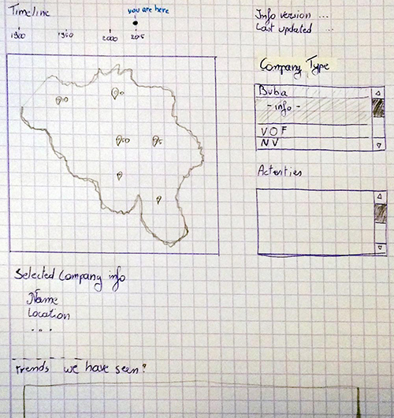
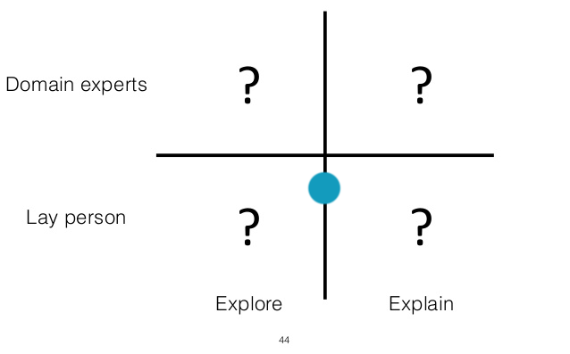
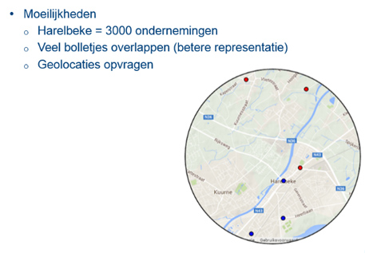
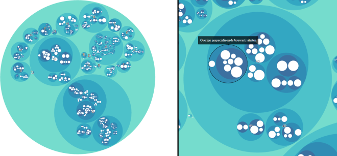
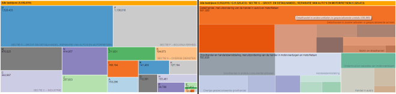
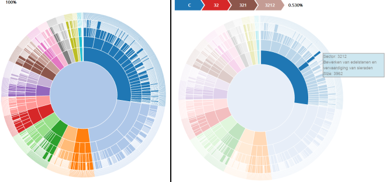
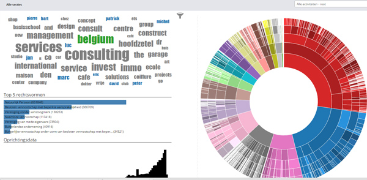

Na wat zoeken en het overwegen van verschillende datasets (Piraten aanslagen, KBO, ...) hebben we uiteindelijk gekozen voor de dataset van de KBO. Klik hier voor de link naar KBO
Feb 14We hebben enkele schetsen gemaakt over de mogelijkheden en hebben onze doelgroep bepaald


Feb 20We zijn aan het werk geschoten met d3 en hebben iets kleins met de data gemaakt als wijze van testopzetting. We hebben ook gezien dat de dataset groter is dan gedacht en kan dus niet zomaar in een website geladen worden.

Feb 27In de zoektocht naar de beste visualisatie om te filteren per sector, hebben we 3 versies gemaakt. De klas koos voor Sunburst.



April 5This is the content of the last section

April 16De huidige versie kan u vinden op de pagina "visualisatie".
Onze blog vindt u hier waar u ook de paper vindt dat de nodige informatie bevat zoals wat, hoe en waarom we de visualisatie hebben gemaakt.
mei 9